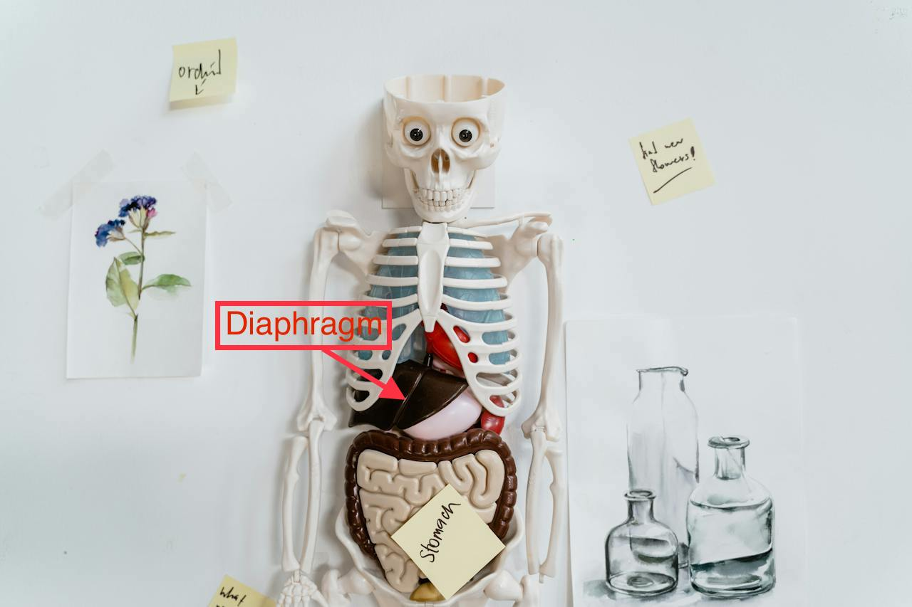

Breath Support is pivotal in order to sustain each pitch accurately while singing. Learning to engage your diaphragm while singing will allow you to achieve appropriate breath support. The diaphragm is a muscule that sits below the lungs and plays a crucial role in the process of breathing.
Posture Paragraph

© 2024 Introduction to Singing